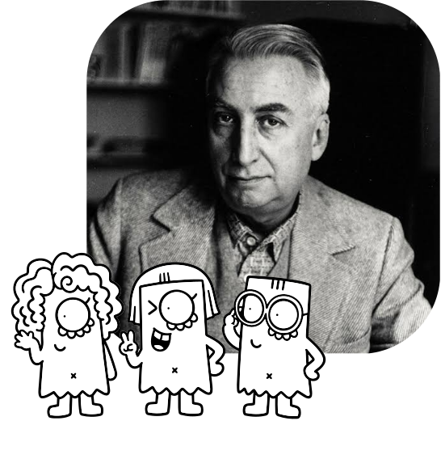
Definición:Función de la palabra escrita sobre la imagen que limita la polisemia multiplicidad de significados guiando al espectador hacia una interpretación específica.
Ejemplo:El texto "Sabor de Italia" debajo de un plato de pasta evita que el espectador piense simplemente en "comida rápida" y lo dirige hacia el origen gastronómico.
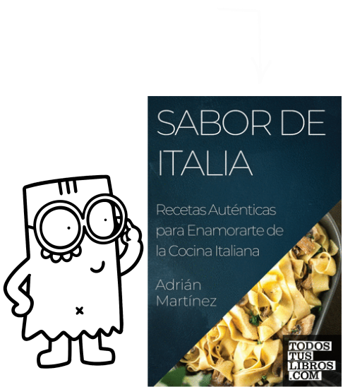
Definición:El sistema de conocimientos compartidos dentro de una sociedad que permite a los individuos interpretar las connotaciones implícitas en un mensaje.
Ejemplo:Reconocer que la combinación de colores rojo, blanco y verde corresponde a la bandera y tradición de Italia.

Definición:El nivel secundario de significación donde el signo denotado se convierte en el vehículo para expresar valores, emociones o ideas culturales implícitas.
Ejemplo:Utilizar al pastor alemán en un anuncio para sugerir "protección", "seguridad" o "fidelidad".
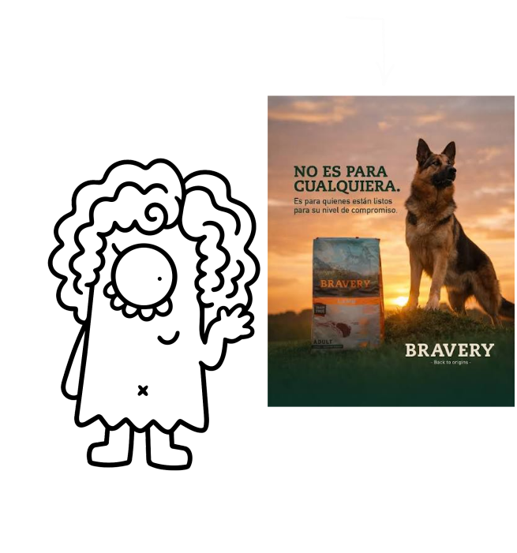
Definición:El marco general de saberes, creencias, normas y representaciones compartidas desde el cual los signos adquieren sus significados secundarios o connotados.
Ejemplo:La valoración de la "cocina casera" como un acto de afecto dentro de la tradición mediterránea.
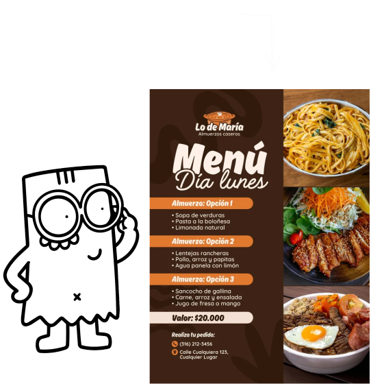
Definición:El nivel primario e inmediato del signo. La relación directa entre el significante y lo que representa en la realidad, con objetividad.
Ejemplo:Ver en una foto a un perro de raza pastor alemán.
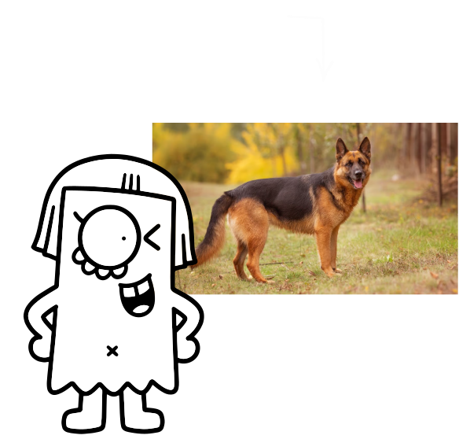
Definición:Esquema mental simplificado y colectivamente repetido que condensa una idea o grupo social para ser reconocido de forma inmediata.
Ejemplo:La figura del chef con bigote y boina para representar la alta cocina francesa en la publicidad.
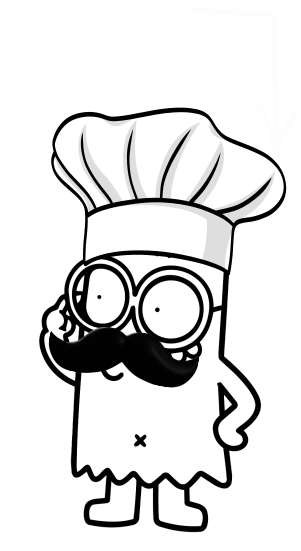
Definición:El conjunto de valores y visiones del mundo abstractas que se transmiten de manera invisible a través de los mitos y las connotaciones culturales.
Ejemplo:La noción de que el consumo de ciertos productos de marca garantiza estatus social o éxito personal.
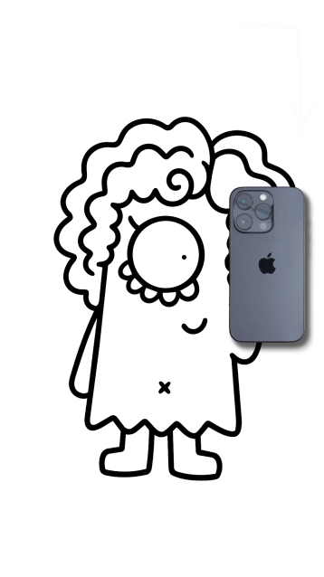
Definición:La interpretación profunda de una imagen mediante la identificación de los signos connotados que comunican conceptos culturales más amplios.
Ejemplo:Interpretar la red de compras entreabierta como un símbolo de "frescura recién traída del mercado".

Definición:Los significados culturales, simbólicos y emocionales que se superponen a la imagen literal según las convenciones de la sociedad.
Ejemplo:Los tomates, pimientos y colores verde, blanco y rojo evocan la noción de "italianidad" y frescura de mercado.

Definición:La imagen en su nivel literal o descriptivo. Lo que verdaderamente representa la fotografía o ilustración antes de añadirle interpretaciones culturales.
Ejemplo:La foto de un tomate, un pimiento, un paquete de pasta y una bolsa abierta sobre una red.

Definición:El componente textual de una imagen (títulos, etiquetas, leyendas). Funciona principalmente como anclaje para fijar el sentido y evitar lecturas erróneas, o como relevo para añadir información que la imagen no muestra.
Ejemplo:La palabra "Panzani" en un anuncio publicitario.

Definición:Un sistema de habla que toma un sentido histórico y culturalmente construido y lo presenta como si fuera algo "natural", indiscutible o evidente por sí mismo.
Ejemplo:Un anuncio de champú que presenta el cabello brillante y liso como el estándar "natural" e incuestionable de la belleza femenina.
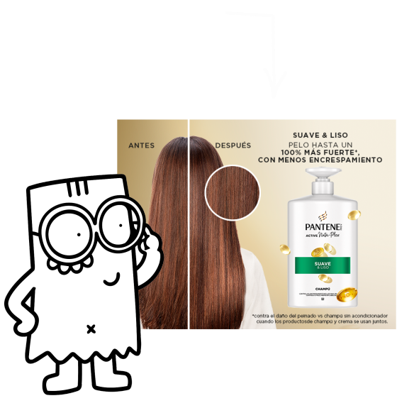
Definición:El proceso mediante el cual el mito convierte significados históricos, sociales y culturales en algo que parece "natural", obvio o con sentido común, ocultando la intención ideológica detrás del mensaje.
Ejemplo:Presentar una foto de la madre cocinando para toda la familia como una escena "natural" y biológica, invisibilizando que se trata de un rol socialmente asignado.
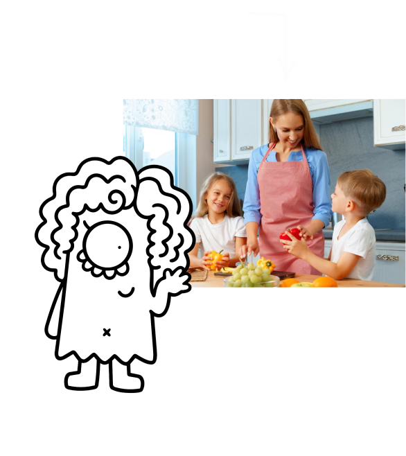
Definición:Función del mensaje lingüístico donde el texto y la imagen se complementan de manera recíproca. A diferencia del anclaje, el texto aporta datos nuevos que la imagen no muestra por sí sola, haciendo avanzar el sentido o la historia.
Ejemplo:En una tira cómica o historieta, el diálogo escrito dentro del globo que explica lo que el personaje está pensando o sintiendo mientras la imagen solo muestra su cara.
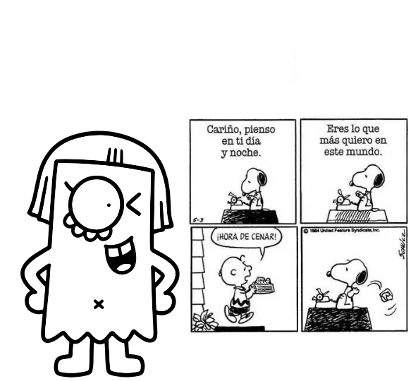
Definición:El estudio de los mecanismos visuales y expresivos (figuras de estilo, encuadres, colores) utilizados en la imagen para persuadir, connotar y transmitir mensajes ideológicos de forma estructurada.
Ejemplo:Organizar los ingredientes de una comida sobre una mesa de madera rústica utilizando iluminación cálida para construir la retórica de lo "artesanal" y "saludable".

Definición:El acto dinámico o proceso mediante el cual se une el plano de la denotación (lo que se ve) con el plano de la connotación (lo que significa), produciendo un sentido completo dentro de la mente del espectador.
Ejemplo:La articulación mental que ocurre cuando la vista de una botella de vino tinto junto a dos copas (denotación) produce el sentido de una "cena romántica" (connotación).
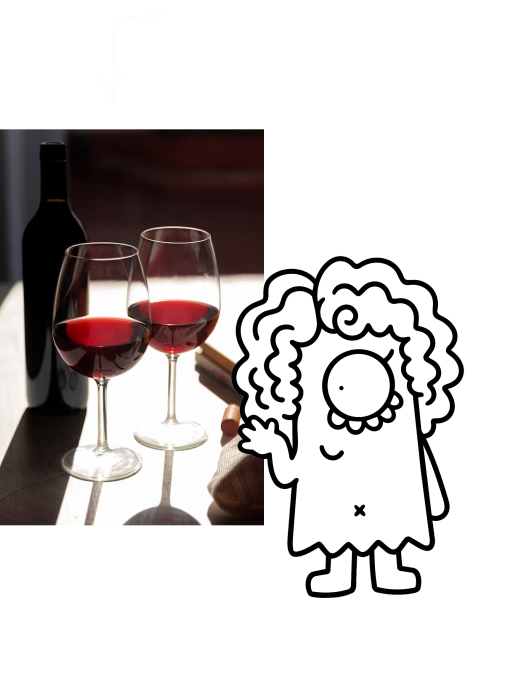